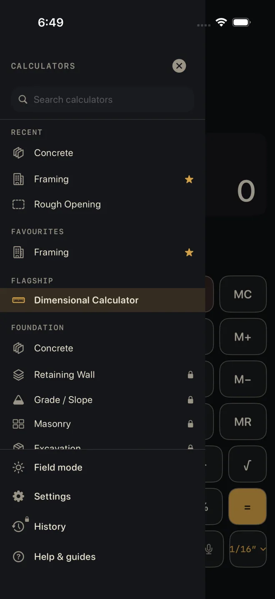
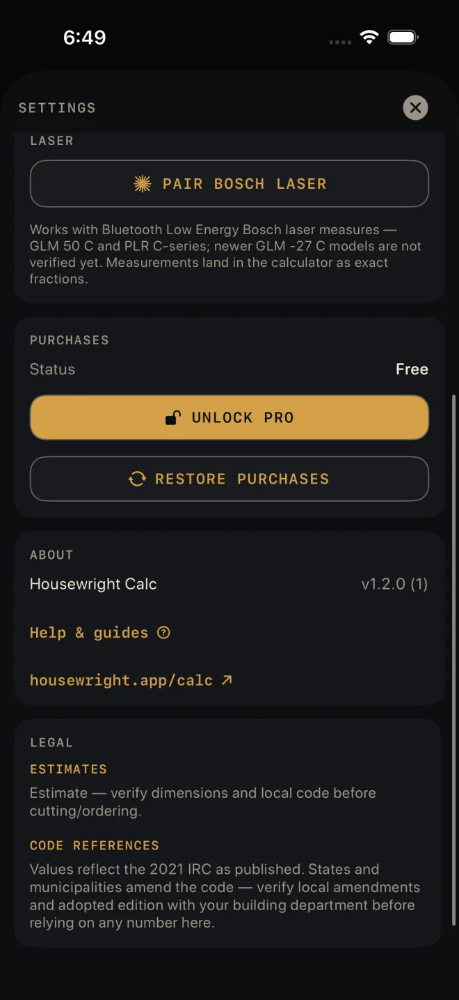

Free and Pro
Housewright Calc is free to use, with one optional purchase called Pro. Pro is bought once. It is never a subscription, and there are no ads in either version.
Free, for good
Five calculators are free and stay free:
- Dimensional Calculator — all of it, including the tape, parentheses and memory, equal parts, diagonal and voice entry
- Unit Converter
- Framing
- Concrete
- Rough Opening
Also free: Field mode, laser pairing, Siri, and this help — every guide, including the guides for calculators you have not unlocked.
What Pro adds
- Every other calculator. Pro opens all 34 calculators. In the drawer, a calculator that needs Pro shows a small lock.
- Cut sheet and PDF export — on every calculator, the free ones included. See Cut sheets and templates.
- The cut list on the Lock Screen. See Cut list on the Lock Screen, and widgets.
- History — saving results and coming back to them. See Saving and history.

1 2 3The purchase screen also lists the cut optimizer, the home-screen widgets, Family Sharing, and every update at no extra cost.
Without Pro, the Pro buttons are still there, with a lock: SHEET — PRO, PDF — PRO, LIST — PRO, SEND — PRO, SAVE — PRO. Tapping one opens the purchase screen. The purchase screen never opens by itself.
Buying Pro

1 4- Open the purchase screen: tap a locked calculator in the drawer, tap any — PRO button, or go to Settings ▸ PURCHASES ▸ UNLOCK PRO.
- Read PRO INCLUDES. The button at the bottom shows the price from the App Store in your own currency.
- Tap UNLOCK PRO and confirm with the App Store as you would any purchase.
- The locks come off straight away. Settings ▸ PURCHASES ▸ Status reads Pro.
The purchase belongs to your Apple ID, not to the phone. The purchase screen's own words: "Everything you buy stays yours — forever, across every device signed into the same Apple ID."
Restoring a purchase
On a new phone, or after re-installing:
 2
3
2
3
- Open the drawer and tap Settings.
- Under PURCHASES, tap RESTORE PURCHASES. The button reads RESTORING… while it works. The App Store may ask you to sign in.
- When it finishes, Status reads Pro.
The purchase screen has the same RESTORE PURCHASES button. Restore asks the App Store for the purchases made on the Apple ID signed in to the phone, then checks them for Pro.
If it doesn't work
- Restore finishes and Status still reads Free. The App Store found no Pro purchase on this Apple ID. The line under the button says so: "No Pro purchase found for this Apple ID. Check the App Store account on this phone is the one that bought Pro." Check the phone is signed in to the Apple ID that bought Pro — or, with Family Sharing, to an account in that family.
- Red text under the button. That is the App Store's own error, usually no connection. Try again when you are back online. Cancelling the sign-in shows no error; nothing was changed.
- "Can't reach the App Store right now…" The purchase screen could not load the price. The line goes on to say the free calculators keep working. Tap Try again under it when you have signal.
- "Purchase is pending approval." The purchase is waiting on someone else, such as Ask to Buy. Pro unlocks by itself when it is approved.
- "Purchase could not be verified." Nothing was unlocked. Try RESTORE PURCHASES; if that does not do it, write to us — see Troubleshooting.